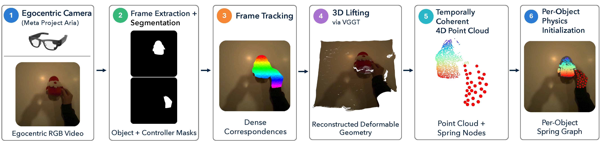
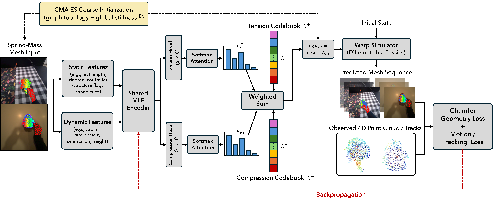

EgoPhys builds generalizable physics-grounded digital twins of deformable objects from a single egocentric RGB video, enabling zero-shot transfer to unseen objects and real robot manipulation planning.
Abstract
Humans naturally understand object physics through everyday interactions, but faithfully predicting complex deformable dynamics, such as elastic materials and fabrics, remains a major challenge for computer vision and robotics. We present EgoPhys, a framework that constructs deformable physical digital twins from egocentric RGB-only video using generalizable priors. EgoPhys overcomes the limitations of existing methods to enable controllable deformable digital twin generation from egocentric videos by distilling per-object inverse-physics solutions into a compact codebook, enabling prediction of dense spring stiffness fields for unseen objects without per-spring test-time optimization. Trained with generalizable priors from diverse egocentric interactions, EgoPhys outperforms baselines in reconstruction, future prediction, and zero-shot generalization. To support training and evaluation, we curate an egocentric interaction dataset covering diverse deformable objects, scenes, and manipulation styles. We deploy EgoPhys on a real XArm6 robot, demonstrating that a digital twin initialized from a single egocentric human play video can serve as an internal world representation to aid in deformable-object planning, highlighting egocentric RGB observations as a scalable path toward real-to-sim pipelines.
Method
Given an egocentric RGB video, EgoPhys first performs 4D reconstruction by tracking dense 2D point trajectories and lifting them to metrically consistent 3D coordinates, producing a coherent 4D point cloud under hand-object occlusion. The object is then modeled as a spring-mass graph, with a derivative-free optimizer estimating its physical parameters from rollout error against the observed cloud. Finally, a generalizable material codebook trained across many objects predicts dense per-spring stiffness for unseen objects at test time, requiring no per-object re-optimization.


Experiments
EgoPhys is compared against PhysTwin and Spring-Gaus under identical egocentric observations, with all methods receiving the same inputs and evaluation protocol. EgoPhys produces more accurate and physically plausible deformations across all tested objects and interaction types.
Zero-Shot Generalization
The learned physics prior is evaluated on 11 held-out sequences never seen during training. EgoPhys predicts accurate deformations for completely new objects and interaction types without any test-time refinement, demonstrating strong zero-shot generalization.
Sim-to-Real Transfer
EgoPhys serves as the forward model inside an MPPI planner. Given a single egocentric video of a novel object, EgoPhys constructs a simulator, plans toward a target configuration, and transfers the trajectory to a physical XArm6 robot — with no real-world fine-tuning or per-instance re-optimization.
Single-hand lift task.
Single-hand lift task on a unseen object.
Sliding contact pull task.
Dataset
We curate 19 egocentric interaction sequences captured with a Meta Project Aria Gen 1 wearable camera. Each sequence records a user interacting with a deformable object, spanning 10+ object categories across diverse backgrounds, lighting conditions, and manipulation styles.